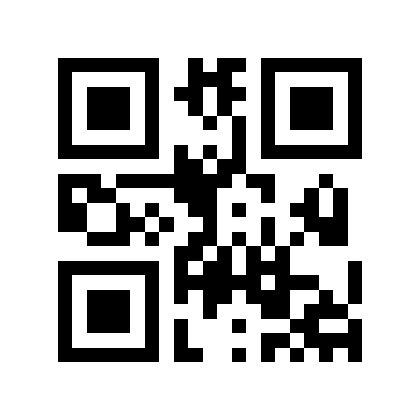
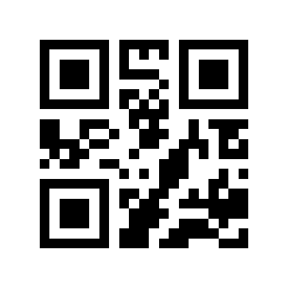
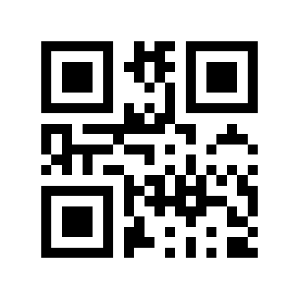
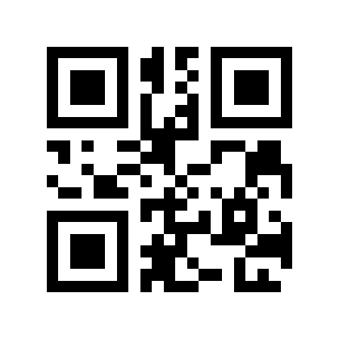
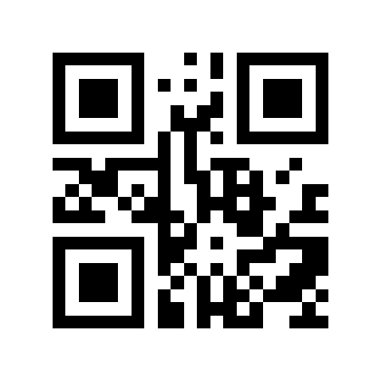
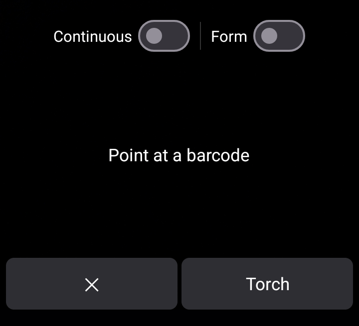
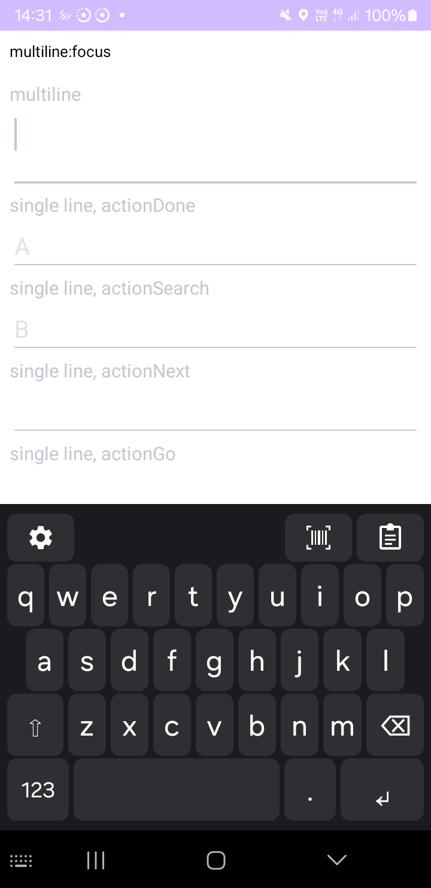

These QR codes let you try Scanner Keyboard's scanning features without a product to scan. Show this page on a laptop or a second phone, then aim your phone's camera at it from the keyboard's scanner view.
Get the keyboard onto your screen: install the app, tap Grant camera permission and Open keyboard settings on its setup screen to enable it, then select Scanner Keyboard as your keyboard. Tap a text field, then the barcode icon in the keyboard's toolbar.

Plain codeAAA111

A different codeBBB222

Newline insideA⏎B

Tab insideA⇥B

Trailing newlineTRAIL⏎
The ⏎ and ⇥ symbols stand for real, invisible
control characters — a newline and a tab — stored inside the code, not printed
as text. The same codes live in the
project
README if you want to print them.
At the top of the viewfinder are two switches: Continuous and Form. Both remember their state. The bottom bar has ✕ (close) and Torch.

| Try this | Switches | What happens |
|---|---|---|
Scan AAA111 once, in a notes app. |
both off | The text AAA111 is typed, the camera buzzes, and the
scanner closes. This is the default one-shot behavior. |
Turn Continuous on. Scan AAA111, then
BBB222, then AAA111 again. |
Continuous on | The scanner stays open and inserts each new code. Scanning the same code twice in a row does nothing; once a different code is seen, the first code counts again. Handy for inventory lists. |
Focus a single-line field that has a Next action (a sign-up form
with two boxes). Turn Form on. Scan A⇥B. |
Form on | A is typed, focus moves to the next box, and B
is typed there — one scan fills two fields. |
Same field, but scan TRAIL⏎. |
Form on | TRAIL is typed and the field's Done / Go / Search action
fires automatically, because the code ends with a newline. |
Scan A⏎B into a multi-line box (notes, a comment field). |
Form on | A real line break is inserted, so you get A and
B on separate lines — no jumping. |
Turn Form off and scan A⇥B again. |
Form off | The value stays literal: a single field receives everything, so usernames and codes that genuinely contain tabs are never split. This is the safe default. |
A two-field form filled by scanning A⇥B with Form
on — A landed in the first box, B in the second:
